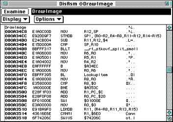
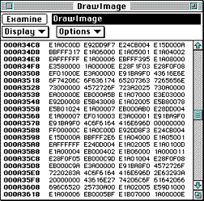

main into the Source window's Examine field to
return to main().
DrawImage() to select that function.
DrawImage() function in the Examine field.
DrawImage() or any
other selected function.

Figure 1: Disassembly window.

Figure 2: Data window.
Note: You can also Command double-click on an item to bring up a new window of the same type examining that item.
For more information about the windows discussed here and about other functionality of the Debugger, see Debugger Menus, Windows, and Dialog Boxes.